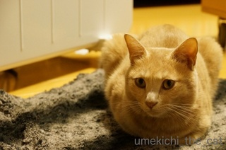
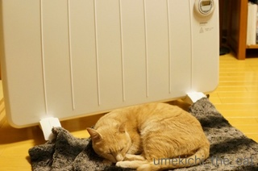
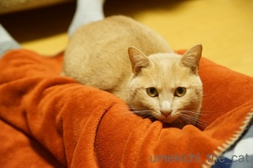
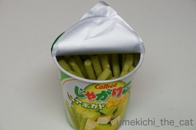
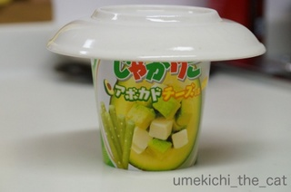
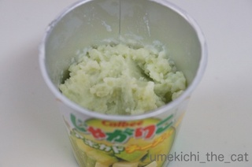
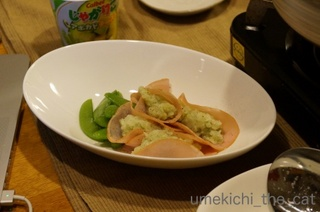

冬アイテム登場 [梅吉]


突如として現れた白くて愛想のない奴は実はぬくくてええヤツでした。
梅吉さんの白い恋人！？
残念ながら面白くはないようです(*>艸<)

でもやっぱりパネルヒーターよりおかーさんのおひざだよね。
お膝というか足の間にはさまってご機嫌です（怖い顔してるけど）。
材料：お湯
じゃがりこ
以上

じゃがりこ本体の半分くらいまでお湯を注ぎます。（やわらかめ、かためはお好みでお湯の量を増減）

フタをして２〜3分待つ。

混ぜ混ぜしているとマッシュポテトの出来上がり〜。

この日はハム巻きにして野菜を添えました。
お弁当のおかずにも良いみたいですよ。
超簡単！

カフェオレ色の梅吉

梅吉 2023年8月10日 永眠


梅吉と出会った譲渡会

犬猫の理由なき殺処分ゼロ
妄想広告
UMEKICHI 光

爆発的に早い！
時々攻撃的！
Thanks to Mr.Boss365
爆発的に早い！
時々攻撃的！
Thanks to Mr.Boss365

なんか、急に冷え込みましたね。
梅吉さんもちぃさんも体調崩さぬようお気をつけください。
膝の上に乗ってくれるなんて羨ましいな。^^)
じゃがりこ、酒の肴にもよさそうですね♪ ^^;
by yes_hama (2016-11-09 21:32)
パネルヒーターよりもお母さんの膝の上を選ぶとは梅吉さん、お母さんキラーですね♪( ´▽｀)
by ニッキー (2016-11-09 22:27)
おかーさんとラブラブなんだから、撮るなや！
ってとこですかね。(大阪弁がよくわからないけど(^^;)
今日はホント、関東も寒かったです。
ハーフコートの下にダウンベストを着て出ましたが、
腕が寒くて、こりゃベストじゃもうダメだ、と思いました〜(><)
by も〜 (2016-11-09 23:45)
じゃがりこ、ほんまに簡単にできるんですね！
一度試してみます(^-^)！
by よーちゃん (2016-11-10 08:19)
ぬくぬく梅吉さん♪
幸せな時間ですね(#^.^#)
じゃがりこ！美味しそうですねぇ～♪
by きぃ (2016-11-10 08:23)
膝や足のあいだに挟まってくれるなんて！
うらやましすぎます！
うちは全然来てくれないの(笑)
by リュカ (2016-11-10 09:34)
yes_hamaさん＞お気遣いありがとうございます♪
yes_hamaさんもアズくんも寒さにやられないようにしてくださいね。
じゃがりこ是非お試しください。
お湯で伸ばすだけでなぜかスナック菓子を食べている罪悪感が消えます^^
ニッキーさん＞梅吉の中では
パネルヒーター＜おかーさん＜布団乾燥機＜お風呂、のようです。
お風呂最強！！
も〜さん＞そうで〜す。笑。梅吉とおかーさんのラブラブタイムでした^^
関西も寒いですよ。
まだ出さなくてもと思っていたダウンコートなんかをその都度たんすから引っ張り出してきたりして・・・衣替えが追いつかない。
よーちゃんさん＞お湯を入れてぬくさが加わるだけで料理した気になるのはなぜでしょうか。笑。たまに手抜きも必要やね〜。
きぃさん＞ぬくぬくから重さで足がしびれてびりびりですが至福の時間です^^
by ちぃ (2016-11-10 09:49)
リュカさん＞足の間でも脇の下にでも指の間にでもどこでも挟まりますよ！
懐っこくてかなわんわ〜（自慢）笑。
by ちぃ (2016-11-10 09:54)
梅吉さんはいつも真剣な目だ〜
まろんも夜は股間で寝るので寝返りうてません。（自慢返し）
by じゅらまろ (2016-11-10 11:10)
じゅらまろさん＞ああっ、返ってきたっ。
股間は布団の上でも中でも辛いよね〜(≧▽≦)
by ちぃ (2016-11-10 15:02)
梅吉君「この膝はぜったい渡さへんで！」てな感じですね！
ちょっと怒り顔なのが可愛い(*´︶`*)❤
ジャガリコでマッシュポテト、衝撃的ですね！
今度やってみますー
by BillK-ko (2016-11-10 18:14)
おや、梅吉さんも足の間に入るんですね。
長時間はシンドイですけど、猫肌の温かさはたまりませんよね～(´▽｀*)
おっ、遂に料理ネタが！
みいこさんに宣戦布告ですか(笑)
by ひでぷに (2016-11-10 23:01)
湯たんぽならぬ猫たんぽ！これからの季節はこれですね(*^^*)
ところで梅吉君ご機嫌なんですよね？ね？
by palpal (2016-11-10 23:54)
うそ～！と・・・え～！じがゃりこで！マッシュポテト！？ですか！
わぉ～！凄い！ためしてみますよ～！
明日、スーパーに行ったら、じゃがりこを探します。^^
by みいこ (2016-11-11 00:15)
美味しそうですね。手軽にできそうですしね。(^^)
by はな (2016-11-11 07:31)
寒いですね 私も梅吉さんとぬくぬくしたいです＾＾
じゃがりこ いろんな種類あるんですね
by みいこ (2016-11-11 12:38)
BillK-koさん＞おかーさんのお膝、梅吉以外に使う人もいないのにね〜笑
真剣だと怖い顔になる梅吉です。
ひでぷにさん＞宣戦布告などとんでもない(( ；ﾟДﾟ))
ワタクシはみいこさんの押しかけ弟子的な気持ちでおりますよ〜。
本格派お料理ブログを横目に見つつ時々インチキ＆B級家庭料理を
繰り出す予定です！
palpalさん＞猫たんぽ暖かいけど手足が痺れてくるのが難点ですね^^;
怖い顔の梅吉はご機嫌です。常態が割とキビシイ顔・・・なんでだろう。
みいこさん＞ぜひぜひじゃがりこマッシュポテトお試しください。
なにか一品欲しい時は助かりますよ。
はなさん＞手軽すぎかもしれません。薬味やスープの封を切る手間がない分
カップラーメンより手間がない！
みいこさん（ねこみいこさん）＞アボガドチーズ味はおっとが小鼻を膨らませて買ってきました。「こんなの初めて見たよ〜」ととっても嬉しそうでした。笑
ワタクシも初めて見ました。
by ちぃ (2016-11-11 15:42)